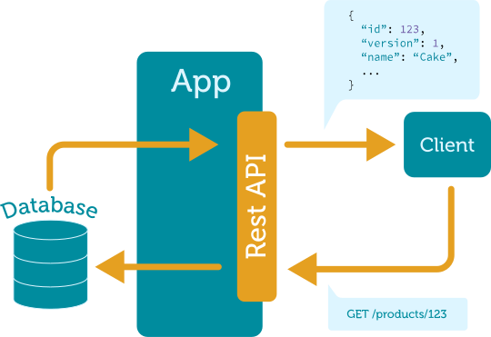
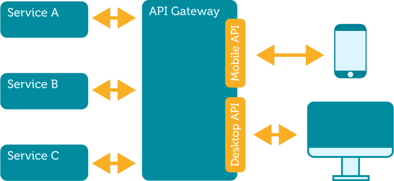
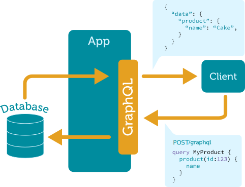
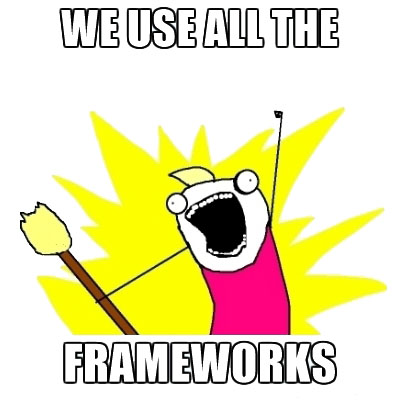

Introduction to GraphQL
by Tiago Fernandez – December 2017
Who is this for?
Typical architecture
API gateway
Common issues
- Over-fetching: too much data in the response
- Under-fetching: not enough data in an endpoint
- Performance: more bandwidth & HTTP requests
- Documentation: writing and maintaining specs
GraphQL approach
What's GraphQL?
- A data query language
- Server-side runtime for executing queries
- Describes what to fetch rather than actual queries
- Agnostic to the underlying database or storage
- Created by Facebook in 2012 and released in 2015
Type system
type Character {
name: String!
appearsIn: [Episode]!
}
enum Episode {
NEWHOPE
EMPIRE
JEDI
}
type Query {
hero: Character
droid(id: ID!): Droid
}
type Human implements Character {
id: ID!
name: String!
friends: [Character]
appearsIn: [Episode]!
starships: [Starship]
totalCredits: Int
}
type Droid implements Character {
id: ID!
name: String!
appearsIn: [Episode]!
primaryFunction: String
}
Queries
query {
hero(id: "1000") {
name
friends {
name
}
}
}
{
"data": {
"hero": {
"name": "R2-D2",
"friends": [
{
"name": "Luke Skywalker"
},
{
"name": "Han Solo"
}
]
}
}
}
Variables
{
human(id: $id) {
name
height(unit: $unit)
}
}
{
"id": "1001",
"unit": "METER"
}
{
"data": {
"human": {
"name": "Darth Vader",
"height": 2.02
}
}
}
Mutations
input ReviewInput {
stars: Int!
}
mutation NewReview($ep: Episode!, $review: ReviewInput!) {
createReview(episode: $ep, review: $review) {
stars
}
}
{
"ep": "JEDI",
"review": {
"stars": 5
}
}
GraphiQL
In-browser IDE for exploring GraphQL
Pros
- Single endpoint: easier to scale
- Tailored responses: clients get what they want
- Less round trips: related nodes returned together
- Backwards compatible: structure up to the client
- Self-documented: built-in web console (GraphiQL)
Cons
- Joins: extra queries in relational databases
- Nested queries: might lead to circular references
- More processing: for parsing & verifying the query
- Caching: query caching needed on client-side
Tools
- graphql-js: Node.js
- apollo & relay: JavaScript clients
- graphene & gql: Python libraries
- graphql-ruby: Ruby implementation
- graphql-java: Java implementation
- sangria: Scala implementation
Many other libraries!
http://graphql.org/code/
